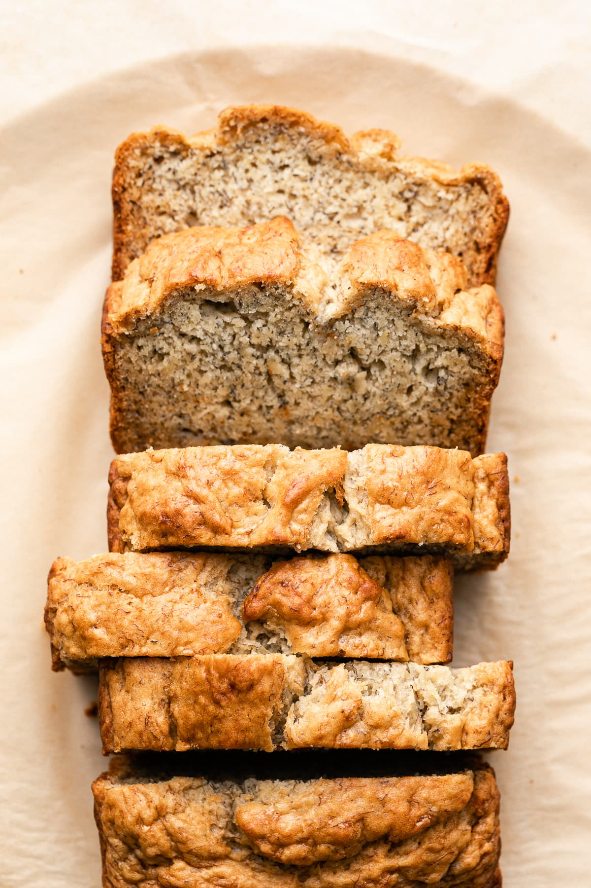

Vegan Banana Bread

Introduction
This ‘tried and true’ classic vegan banana bread recipe is moist,
healthy, and so easy to make. It’s egg & dairy-free, has an oil-free
option, and is the BEST banana bread recipe ever!
Ingredients
- 1 3/4 cups (210g) all-purpose flour
- 1/3 cup (75g) cane sugar
- 1 teaspoon baking powder
- 1 teaspoon baking soda
- Pinch of mineral salt
- 1/3 cup (75 ml) neutral flavored oil
- 1 teaspoon vanilla extract
-
4 small or 3 large overripe banans (about 1 1/2 - 1 3/4 cups
(338-410g)), mashed
- 1/4 cup (56 ml) almond milk, use only if needed
Optional tasty add-ins:
- 1/2 - 2/3 cup chopped walnuts
- 1/4 - 1/2 cup chocolate chips
- 1 teaspoon cinnamon
Instructions
One Bowl Method
-
In a medium sized mixing bowl, mash 3 – 4 bananas (about 1 1/2
cups to 1 3/4 cups works well), add oil/applesauce and vanilla
extract, mix again. Add the flour, sugar, baking soda, baking
powder and salt, and mix well, but don’t overmix, just enough
until the flour is combined. Batter will be slightly thick and a
few lumps is ok. If mixture seems too thick, add milk,
especially if using heavier flours such as whole wheat or whole
spelt (you’re more inclined to need it).
-
Pour batter into a greased loaf pan. Bake for about 50 min – 1
hour. Ovens vary, mine usually takes 50 minutes. You can also do
the toothpick test in the center of the loaf, if it comes out
clean it should be ready. Remove from oven and let cool for 10
min before slicing.
Original Method
-
In a medium/large size bowl, combine flour, sugar, baking
powder, baking soda and salt, set aside. In a medium bowl, mash
bananas. Add the oil, vanilla and bananas to the dry ingredients
and mix until combined, do not overmix. If mixture seems too
thick, add the almond milk (especially if using heavier flours
such as whole wheat or whole spelt, you’re more inclined to need
it).
-
Pour batter into a greased loaf pan. Bake for about 50 min – 1
hour. Ovens vary, mine usually takes 50 minutes. You can also do
the toothpick test in the center of the loaf, if it comes out
clean it should be ready. Remove from oven and let cool for 10
min before slicing.
Back to Odin Recipes